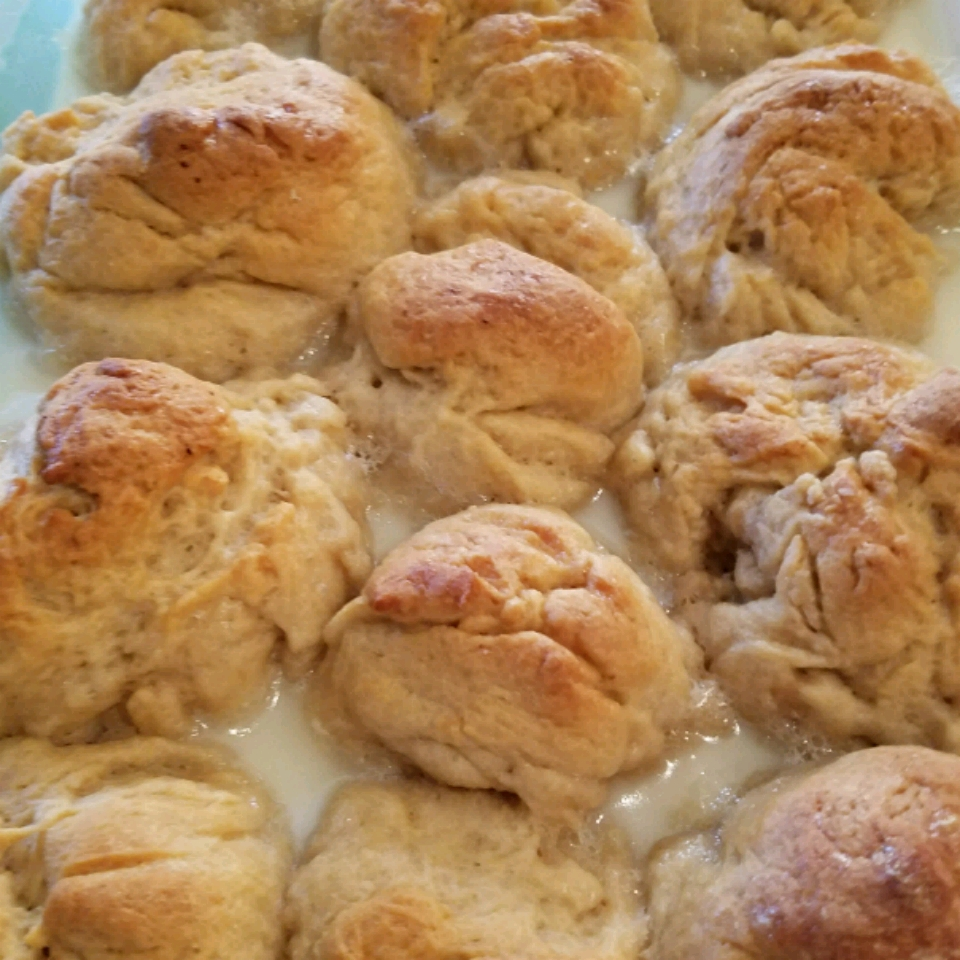

Hawaiian Coconut Bread (Pani Popo)

How about a Hawaiian Dessert?! Another must try!
Delicious Hawaiian bread that anyone will love--even those who don't like coconut! Eat it for dessert or with any meat hot off the grill. Tastes great warm or cool.
Ingredients
- 1 (12 ounce) package frozen dinner rolls, thawed
- 1 (10 ounce) can coconut milk
- 3 tablespoons sweetened condensed milk
- 3/4 cup white sugar, or to taste
Directions
- Coat a 9x13 inch baking dish with cooking spray. Coat your hands with cooking spray or shortening, and roll the dough balls in your hands so that they have a light coating. Place in the prepared dish. Set aside in a warm place to rise until doubled, up to 2 hours.
- Preheat the oven to 350 degrees F (175 degrees C). In a small bowl, stir together the coconut milk, sweetened condensed milk and sugar. Pour this mixture over the top of the rolls as evenly as you can.
- Bake for 30 minutes in the preheated oven, until golden brown. Let cool for a few minutes before separating and serving.
Source: https://www.allrecipes.com/recipe/74931/pani-popo-hawaiian-coconut-bread/